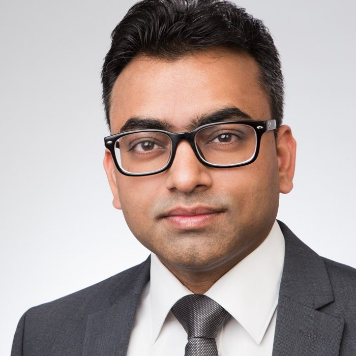

Curriculum vitae

Experience
Research Software Developer
Integrated Climate Impacts Group · Energy, Climate, and Environment Program | International Institute for Applied Systems Analysis (IIASA), Laxenburg, Austria
Research Scholar / Research Software Developer
Advancing Systems Analysis and Energy, Climate, and Environment Programs | International Institute for Applied Systems Analysis (IIASA), Laxenburg, Austria
Postdoctoral Fellow
Institute for Theoretical Physics | TU Wien, Vienna, Austria
Postdoctoral Fellow
Institute for Theoretical Physics | TU Berlin, Berlin, Germany
Postdoctoral Fellow
Institute for Theoretical Physics II: Soft Matter | Heinrich Heine University Düsseldorf, Düsseldorf, Germany
Education
Ph.D.
Jawaharlal Nehru University, New Delhi, India
M.Sc.
Dr. Ram Manohar Lohia Avadh University, Faizabad, India
B.Sc.
Ewing Christian College, University of Allahabad, Allahabad, India
Professional activities
- Guest editor of the special issue Patterned Liquid Crystals for Novel Displays in Crystals (MDPI).
- Member of the topic editor board of Crystals (MDPI) and the reviewer board of Eng (MDPI).
- Reviewer for Soft Matter, The Journal of Chemical Physics, The Journal of Physical Chemistry B, Journal of Rheology, European Physical Journal B, Materials, Crystals, Symmetry and Philosophical Magazine Letters.
Talks and posters
TalkMixtures of liquid crystals and magnetic nanoparticles: hybrid materials with tunable flow properties.
Ashoka University, India
TalkSoft hybrid materials with tunable flow properties: mixtures of liquid crystals and magnetic nanoparticles.
Shiv Nadar University, India
TalkRheology of mixtures of liquid crystals and magnetic nanoparticles.
IIT Indore, India
TalkSteady state rheology of mixtures of liquid crystals and magnetic nanoparticles.
IMSc Chennai, India
TalkRheology of complex fluids: glasses and mixtures of liquid crystals and magnetic nanoparticles.
TU Vienna, Austria
TalkMixtures of magnetic particles and liquid crystals: impact of magnetic particle shape and shear.
Benediktbeuern, Germany, 6th Colloquium of DFG Priority Program 1681
TalkDynamics and rheology of ferronematics.
Berlin, Germany, DPG Spring Meeting
TalkMixtures of magnetic particles and liquid crystals under shear.
Benediktbeuern, Germany, 5th Colloquium of DFG Priority Program 1681
PosterMixtures of magnetic particles and liquid crystals under shear.
Benediktbeuern, Germany, 5th Colloquium of DFG Priority Program 1681
PosterDistribution of residual stresses in glass forming systems.
Lyon, France, Rheology of Gel Networks
PosterIdentification of an underlying directed percolation transition during the yielding of glass under shear.
Primošten, Croatia, 3rd International Workshop on Nonlinear Response in Complex Matter
TalkResidual stresses in glass forming systems.
Regensburg, Germany, DPG Spring Meeting
TalkFormation and growth of shear bands in glasses.
IISER Pune, India, CompFlu-2016
TalkDirected percolation: a route to the formation of shear bands.
Jena, Germany, Minisymposium Starting Ramp Program and Summer Symposium LS Glasschemie II
PosterOn the origin of shear bands in a model glass former.
Montpellier, France, International Workshop on Dynamics in Viscous Liquids
TalkShear bands in a model glass former.
Berlin, Germany, DPG Spring Meeting
TalkTransient dynamics of simple glass formers under shear.
Weimar, Germany, 6th International Workshop on Flow and Fracture of Advanced Glasses
PosterNovelties in the ground state morphologies of random field Ising model.
JNCASR Bangalore, India, Dynamics of Phase Transformations
PosterMass transport models with fragmentation, adsorption and desorption.
JNU New Delhi, India, SPS@25 Looking Forward Best poster award
PosterMass-transport models with multiple-chipping processes.
SINP Kolkata, India, STATPHYS Kolkata VII
PosterConserved mass models with mass dependent fragmentation and aggregation.
JNU New Delhi, India, SPS March Meeting on Soft Matter Physics Best poster award